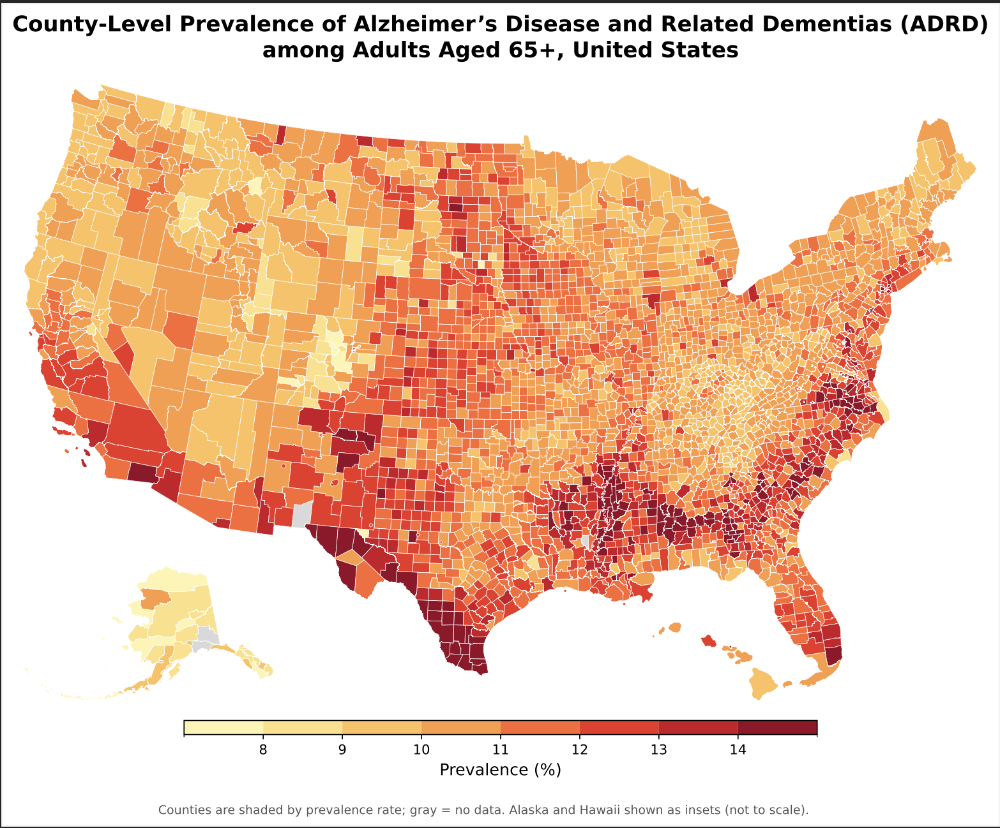

01 / PATTERNS
Geography matters
Many studies reported greater burden in rural settings, but the direction and size of differences varied across studies.
Exploring how rural–urban patterns, community environments, and social vulnerability intersect with Alzheimer's disease dementia prevalence across the United States.
Alzheimer's disease dementia is often discussed through individual risk factors. But health is also shaped by the places people live: the resources available to them, the design of their communities, and the social and economic conditions that influence daily life.
This research brought together two related questions. What does the evidence tell us about rural–urban differences in Alzheimer's disease and related dementias? And can county-level characteristics of the built and social environments help explain geographic variation in Alzheimer's disease dementia prevalence?

The scoping review examined research published since 2000 on rural–urban disparities in Alzheimer's disease and related dementias. Following PRISMA-ScR guidance, the review brought together evidence across five databases to understand how disparities have been studied and where important gaps remain.
Across the literature, many studies reported higher Alzheimer's disease or dementia prevalence or incidence in rural areas, although findings were not consistent. Differences in how studies defined and classified rurality made comparisons difficult.
The review also highlighted that research had focused more heavily on individual and demographic risk factors than on environmental and lifestyle influences. That gap helped motivate the next part of the work.
Many studies reported greater burden in rural settings, but the direction and size of differences varied across studies.
Inconsistent rural–urban classification systems made it harder to compare results and draw a unified picture.
Environmental and lifestyle factors remained comparatively underexplored, creating an opportunity for broader geographic analysis.
The second study examined cross-sectional associations between county-level Alzheimer's disease dementia prevalence and two sets of community characteristics: built-environment measures and the CDC/ATSDR Social Vulnerability Index (SVI).
Built-environment measures were organized around the 5D framework: density, diversity, design, destination accessibility, and distance to transit. Additional measures included grocery and convenience store access and hospital access. SVI variables represented dimensions such as socioeconomic status, household composition, and housing and transportation.
Random Forest and XGBoost models were developed nationally and regionally. SHAP values were used to interpret the relative contribution of variables to model predictions.
The combined built-environment and social-vulnerability model performed differently across regions. The Northeast showed the strongest predictive fit, while the variables contributing most to predictions were not the same from one region to another.

Built-environment variables alone explained much of the model's predictive variation. Grocery store counts and walkability were among the influential variables.
The built-environment-only model performed poorly, but improved substantially when SVI variables were added. No-vehicle households, single-parent households, and lack of insurance were among the prominent variables.
Built-environment and social-vulnerability variables both contributed to model predictions, with patterns varying across the two regions.
How to read these results. The regional R² values describe model fit on held-out test data; they do not measure the proportion of Alzheimer's disease cases caused by these variables. SHAP values help interpret how features contributed to model predictions, but they do not establish causal effects.
The findings suggest that the community characteristics most useful for understanding Alzheimer's disease dementia prevalence may depend on regional context. In the more urbanized Northeast, built-environment measures such as grocery store access and walkability were more influential. In the South, social-vulnerability measures played a stronger role in the combined model. In the Midwest and West, both groups of variables contributed.
This points toward the value of geographically informed research and public health planning. A single national average can obscure differences in the conditions communities face and the resources available to them.
It also raises further questions: Which neighborhood conditions matter at a more local scale? How do transportation, access to care, and social resources interact over time? And how might longitudinal data help distinguish patterns that are predictive from relationships that may be causal?
The machine learning study used cross-sectional county-level data. Because the unit of analysis was the county, observed relationships may not reflect individual-level experiences, and county averages can conceal meaningful differences within communities. The analysis also could not establish temporal or causal relationships.
The authors noted that the SHAP findings should be treated as exploratory and hypothesis-generating, rather than as evidence of causality or a direct basis for intervention decisions. Future work could benefit from finer geographic data, longitudinal measures, and methods that account for spatial dependencies and uncertainty.
For me, the larger lesson is that understanding health means looking beyond the outcome itself. It means asking what surrounds people, how those conditions differ across places, and what those differences might help us investigate next.
Alzheimer's & Dementia: Translational Research & Clinical Interventions , 2025, 11, e70047.
Read the publication ↗Journal of Alzheimer's Disease, 2025, 107(4), 1693–1705.
Read the publication ↗